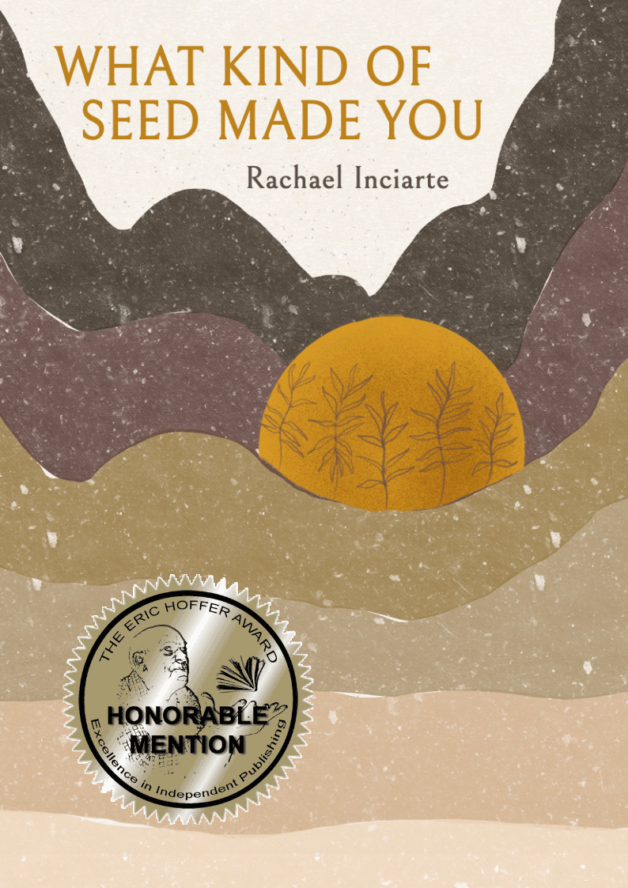

Eric Hoffer Award honorable mention
What Kind of Seed Made You
A chapbook of poetry from Finishing Line Press — roots inching through unfamiliar soil, and plants which bear rare and uncertain fruit.
2022 Eric Hoffer Book Award Honorable Mention

consider though — two hundred years to grow and only twenty minutes to burn down, no matter what kind of seed made you
from “on visiting Joshua Tree while two simultaneous brush fires burn in Thermal, CA”
Books
Poetry, a writing guide, and a picture book
“In What Kind of Seed Made You, Rachael Inciarte writes an elegant and delicate study of roots inching through unfamiliar soil and plants which bear rare and uncertain fruit.”
Kristian Macaron · poet/writer of Storm, editor of Manzano Mountain Review“This is a book that asks you how wise you are about the desert, about the world… all invite us to reconsider the cradle of rest available in nature.”
Ashley Wallace · genre editor of Miracle Monocle“Part ode to the past and part rally cry of the future, this collection is delicate and intricate much like the life its pages celebrates.”
Eric Hoffer Award · Honorable Mention
In magazines
All publications →
Recent publications
“Flower Arranging for the Dead”
Glass: A Journal of Poetry“urban planning”
Moon City Review“ornament”
Coffin Bell
Recognition
All awards →
Awards & nominations
Longlisted, Dithering Chaps Press
Brittle the Egg · 2026Futurist Debut Book Award Longlist
Zugunruhe · 2025Eric Hoffer Book Award Honorable Mention
What Kind of Seed Made You · 2022